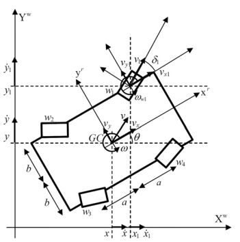

参考: paper
构型说明
四个带机械限位的独立舵轮, 主要有平移， 自转， 边走边转等模式。

主要参数
- 车体坐标下左前轮距离X轴距离: b
- 车体坐标系下左前轮距离Y轴距离: a
- 左前轮车体坐标(x1, y1) = (b, a)
- 右前轮车体坐标(x2, y2) = (-b, a)
- 左后轮车体坐标(x3, y3) = (b, -a)
- 右后轮车体坐标(x4, y4) = (-b, -a)
- 车体坐标系下左前轮距离原点距离: k = b2+a2
- 轮子(左前， 右前， 左后， 右后)车体坐标系下的航向角: δ1, δ2, δ3, δ4
- 车体在世界坐标系下的旋量: (Vx,Vy,ω)
运动学模型
思路: 车体的速度与自身旋转的速度叠加
vxi=vi cos(δi)=Vx−yi ωvyi=vi sin(δi)=Vy+xi ω(1.1)
将上面的式子整理为矩阵形式(共4个轮子)
P8x3VxVyω=X8x4v1v2v3v4(1.2)
其中
P8x3=1010101001010101−ba−b−ab−aba
X8x4=c(δ1)s(δ1)00000000c(δ2)s(δ2)00000000c(δ3)s(δ3)00000000c(δ4)s(δ4)
其中c(⋅), s(⋅) 分别表示余弦和正弦函数。
又根据矩阵论相关知识， 对P8x3进行求伪逆:
P+=4110−b/K01a/K10−b/K01−a/K10b/K01−a/K10b/K01a/K
其中K=(a2+b2)=k2
对公式(1.2)左右左乘P+, 得到:
VxVyω=41c(δ1)s(δ1)W1c(δ2)s(δ2)W2c(δ3)s(δ3)W3c(δ4)s(δ4)W4v1v2v3v4(1.3)
其中Wi=(−yic(δi)+xis(δi))/K
式1.3即为四舵轮底盘的正运动学公式， 对其求逆即为逆运动学公式(左乘X伪逆即可)
运动学公式的线性化
令T=[Vx,Vy,ω]T,δ=[δ1,δ2,δ3,δ4]T,v=[v1,v2,v3,v4]T, 则式(1.3)可以写为如下形式:
T=f(δ,v)=41c(δ1)s(δ1)W1c(δ2)s(δ2)W2c(δ3)s(δ3)W3c(δ4)s(δ4)W4v(1.4)
对式(1.4)在(δ,v)进行一阶泰勒展开， 可以得到:
T+ΔT+=f(δ,v)+∂δ∂fΔδ+∂v∂fΔv=41c(δ1)s(δ1)W1c(δ2)s(δ2)W2c(δ3)s(δ3)W3c(δ4)s(δ4)W4Δv41−v1s(δ1)v1c(δ1)(b∗s(δ1)+a∗c(δ1))v1/K−v2s(δ2)v2c(δ2)(b∗s(δ2)−a∗c(δ2))v2/K−v3s(δ3)v3c(δ3)(−b∗s(δ3)−a∗c(δ3))v3/K−v4s(δ4)v4c(δ4)(−b∗s(δ4)+a∗c(δ4))v4/KΔδ=JvΔv+JδΔδ(1.5)
翻转决策
QP问题构造
使用QP轮速/位置分配器的初衷是解决4个轮子控制响应的同步问题， 同时在该步骤考虑轮子的机械限位限制及平滑性， 以便上层在可以同时放开(V_x, V_y, w)的控制指令
QP中对于轮速需要翻转的情况无能为力， 需要再QP环节前进行决策， QP中单纯对舵轮角进行限制
由于式1.5为在当前状态线性化， 故需要对执行的Ttarget进行饱和限制,保证ΔT较小， 否则也不符合运动学约束， 后续可以考虑提高QPallocator的频率， 以保证快速响应
如何保证精度呢， 关键在于应用nullspace control and HQP
决策变量
设决策变量x=(Δv1,Δv2,Δv3,Δv4,Δδ1,Δδ2,Δδ3,Δδ4) 故式1.4可写为:
ΔT=f(x)=[Jv00Jδ]x(2.1)
考虑带松弛变量的QP问题， 以保证四轮的协调性优先满足(用于等式约束):
ΔT=f(x)=Jx+s(2.2)
其中松弛变量s=(sx,sy,sw)可以与x组成新的决策变量z=(x,s)
代价函数
标准QP形式
J(x)=21zTHz+gTz(2.3)
运动学跟踪项
我们希望qp解算出来的x与当前的舵轮角度与轮速叠加对应的T与命令值Tcmd尽量接近。
令ΔT=Tcmd−Tcurrent
Jtrack=w1∥Jx−ΔT∥2(2.4)
式2.2展开, 有：
Jtrack=(Jx−ΔT)Tw1(Jx−ΔT)=xT(JTw1J)x−2xT(JTw1ΔT)+(ΔT)Tw1(ΔT)(2.5)
指令平滑项
Jsmooth=w2∥x∥2(2.6)
接近死区惩罚项
目前暂不考虑
松弛项
Jslack=w3∥s∥2(2.7)
代价矩阵
Hessian矩阵:
H=diag(JTw1J+w2,w3)(2.8)
梯度矩阵:
g=(−JTw1ΔT,0)(2.9)
约束矩阵
等式约束
见式2.2
不等式约束
lb≤x≤ub
δi,min−δprev,i≤Δδi≤δi,max−δprev,i
−vmax−vprev,i≤Δvi≤vmax−vprev,i
−δ˙maxΔt≤Δδi≤δ˙maxΔt
−amaxΔt≤Δvi≤amaxΔt
- 零位限制
主要考虑小vx, vy时轻微的扰动会导致舵轮角的剧烈变化， 从而导致舵轮翻转。
考虑舵轮模型的运动学MPC
4WIS动力学模型
拉格朗日动力学模型
考虑舵轮模型的动力学MPC